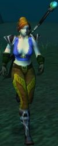
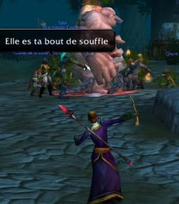

Joué par :
dave789mtg Joué par :
[ Information masquée ] Age : 19
Lieu de naisance : Plaine des rouges-coeur
Signe de naissance : La malice
Sexe : Femme
Race : Humain
Faction : Alliance
Formation : Mage
Niveau : 29
Guilde : Ombres Ardentes Artisanat 1 : Mineur
Artisanat 2 : Ingenieur
Description : Dès sa naissance dans les plaines des rouges-coeurs, Lorenzia montrait une facilité étonante à maitriser les energies arcanes. En grandissant, elle se fut connaître dans toute la ville des artisans comme "cette gamine qui bidouillle tout". En effet, cette jeune fille s'amusait avec des différents explosifs, ce qui lui vallut l'amitié de nombreux gnomes.
La vie suiva son cours alors que Lorenzia suivait l'enseignement d'un vieux mage nomé Kareth. Néanmoins, sa vie fut boulversée alors que ses parents, Lili et Rob, furent envoyé combattre la horde dans la vallée de strangleronce.
Un jour qui suivait la routine du quotidien pour Lorenzia (occupée à faire exploser des rochers, en compagnie des ingénieurs gnomes), une sombre nouvelle arriva. Son professeur, le maitre Kareth, la convonqua dans son bureau, ainsi que sa soeur Cathie, pour leur apprendre la mort de leurs parents, tués au front.
En sortant du bureau, le ciel bleu fut couvert par des nuages noirs comme l'humeur des deux soeurs. Aveuglées par la colère, elle se promirent de venger la mort de leurs parents, avec les dieux comme témoins.
Quatrième Ère [5]
Lune de la Force
Décade du Panda
Décade du Gorille
Décade de l'Ours
Lune d'Agilité
Décade du Tigre
Décade du Singe
Décade du Faucon
Lune de l'Esprit [5]
Décade de la Chouette
Décade de la Baleine [2]
Le combat pour Darkshire
4ème jour de la Décade de la Baleine ( Lune de l'Esprit ) - Quatrième Ère
Darkshire, un endroit terrifiant ou bien de nombreux mystères résident. Je n'avait que entendu des rumeurs mais aujourd'hui j'en ai été témoin.
Abandonnant les collines de l'ouest, j'avais recu pour mission de me rendre dans le darkshire pour contacter la milice locale afin de les aider à regler des problèmes divers.
Ne voulant pas perdre trop de temps avec les bêtes sauvages, je suiva la route. Arrivée un embranchement, j'apercu un cadavre mutilé. Alors que je m'approcha, une odeur acre de mort envahit mes narrines. Une nausée m'emplit et une soudaine envie de vomir s'empara de moi. Cette vague de nausée diminua mais ne disparu pas, ce qui me poussa à me dépecher. Darkshire n'était plus très loin donc il ne me fallut que quelques minutes pour y arriver mais dès que je fut sur place, une vision terrible s'offra à moi : une abomination attaquait la ville !
Sans même avoir eut le temps de réfléchir, les mots d'un sort d'arcane jaillirent dans ma tête et je commenca à incanter, dirigeant ces forces vers la créature mort vivantes. Quand les premiers missiles arrivairent à destination, je remarqua que de nombreux aventuriers étaient déjà en train de combattre la bête. Celle ci attaquaient sans relache mais les aventuriers redoublaient les coups. Au bout de quelques minutes de combat, dans lesquelles je lanca la pluspart de mes sorts, jusqu'au point ou il ne me resta plus du tout d'energie magique, j'utilisa ma baguette qui me glissait des mains à cause de la fatigue. Des goutes de sueur perlaient sur mon visage et mes jambes tremblaient alors qu'un des guerriers s'exclama :
"- Elle est à bout de souffle ! "
Une lueur d'espoir renaissa en moi et je rassembla mes ultimes forces pour lancer un dernier missile magique. Les missiles sortirent de ma main alors que je commencais à tomber dans l'inconscience. Ma vision s'était broullier, mes narines me brulaient à cause de la puanteur et ma tête m'oppressait alors que les premiers crier de joie se firent entendre car la bête était finalement tombée. Je me souviens seulement d'un des membre de la milice qui s'avancait vers moi avant de perdre connaissance.
Un reveil difficile
5ème jour de la Décade de la Baleine ( Lune de l'Esprit ) - Quatrième Ère
Le néant, tout autour de moi.
Je tombe à l'infini dans un puit sans fond, sans aucune texture ni consistance. J'entend des bruits diforme que je ne peux comprendre, alors que je continue à tomber. La chute semble interminable bien que les bruits se font plus clair : je peux clairement dire que ce sont des voix, mais je suis encore incapable de dire ce qu'elles disent. La peur m'envahissait peu à peu alors que je commencais à penser à la fin de la chute, j'allais surement mourir, mais ou suis-je ? Comment suis-je arrivé ici ? Je l'ignore, j'y pense mais je ne peut m'en souvenir, alors que la chute continue ...
Les voix s'amplifiaient. Je me rendis compte que ce n'était pas des voix mais bien plutôt un chant, une incantation, comme celles que j'ai entendut alors que ..... je ne peux me souvenir ou j'ai entendu cela. Une vive douleur me transpersa la tête alors que je mis une main sur ce souvenir. La douleur passa petit à petit et je repris conscience de ma chute.
Le chant de voix était clair à présent, aussi, je pouvait distinguer certaines couleurs, très fades, mais elles étaient là. Je pouvais clairement entendre le chant et j'apercut un flash aveuglant. Tout était blanc à présent, mais ma vision revenu assez rapidement et je me reveilla dans un lit. La chute et la sensation de chute étaient terminées. Le chant était prononcé par 2 prêtres en tenues blanche, penchés sur mon lit. Leur visage émanait d'une joie non dissimulé alors qu'ils me voyaient rouvrir les yeux. Je me sentait déjà mieux alors qu'un des prêtre me demanda :
"- Comment vous sentez vous ?" Rassemblant mes forces, je lui répondit :
"- Que m'est-il arrivé ? Je me souviens seulement d'une chute interminable.
- Vous avez perdu connaissance dans la bataille contre l'abomination et nous vous avons ramener ici, dans l'auberge de darkshire. Votre sensation de chute vient d'un virus que vous avez contracté, mais heureusement pour vosu que nous sommes intervenus rapidement.
- Que me serait-il arrivé dans le cas contraire ?
- Je préfère pas le savoir, jeune mage. Vous n'aviez pas répondu à ma question, comment vous sentez vous ?
- Je crois que ca peut aller, merci.
- Vous devriez vous reposer au moins aujourd'hui, pour vous remettre du choc.
- Si vous pensez que c'est nécessaire ....
- Fortement conseillé. Au revoir." Il posa sa main sur mon front et je sombra dans un sommeil paisible.
Décade du Lapin [3]
Une jeune mage à la fête lunaire
3ème jour de la Décade du Lapin ( Lune de l'Esprit ) - Quatrième Ère
Revenue à Stormwind après une expédition dans les montagnes de Dun Morogh avec mes cheres amies Iliomora et Lyinn, j'appris que la fête lunaire avait lieu et que je pouvait en faire partie si j'allumait quelques fusées d'artifices. Aimant naturellement faire exploser tout ce que je peux, je m'empressa d'acheter les explosifs au marchand du coin et je les déposa dans les tubes fait à cette usage. De nombreux effets lumineux, que je contempla longuement, illuminairent le ciel de Stormwind. Voyant ceci, le maître de cérémonie jugea judicieux de me léguer une invitation à Reflet-de-lune, le lieu sacré de rassemblement des druides. Je me placea dans le couloir lunaire supérieure et commenca la téléportation.
J'étais déjà habitué aux téléportations, bien que celle ci soit assez particulière. La sensation, qui d'habitude me plombait et me faisait sentir très lourde, était tout le contre, je me sentais légère et je me voyait déjà m'élever vers les cieux dans le cercle de lumière. Mes pieds quittèrent le sol et je m'éleva doucement, pour m'arrêter au niveau du toit des maisons. Un court moment après, je pris énormement de vitesse, à tel point au mes yeux ne puissent plus que voir la lumière blanche du cerlce lunaire. Quand ma vision se réadapta, j'étais toujours dans un cercle lunaire, mais entourée de fêtard qui venait de Stormwind. Au dela de ceux-ci se trouvaient différents représentants des capitales d'Azeroth et même de Kalimdor, j'étais dans reflet-de-lune, chez les druides.
La fête était supervisée par Valadar Starsong, qui collectait des pièces des ancêtres, preuve de ma participation de la fête. Après m'avoir été informé sur les origines de cette fête, je me mis en route pour rechercher les pièces des ancêtres. J'en récupéra quelques unes rapidement en me téléportant de ille en ville, en apprenant toujours un peu plsu sur cet événement. J'eut rapidement assez de ces pièces pour obtenir une récompense auprès de Valadar Starsong, ce qui me fit réutiliser l'invitation à reflet-de-lune. L'ancien elfe m'offra le choix entre différent objets, dans lesquels je coisissit une robe de cérémonie rose et quelques dim sum de la fête.
Contente de ma participation à cette fête, je retourna à la taverne de Stormwind, dans laquelle j'avais l'habitude d'aller (celle près de la banque), dégusta mes dim sum et alla me coucher, heureuse.
L'ingénieur
4ème jour de la Décade du Lapin ( Lune de l'Esprit ) - Quatrième Ère]
Après avoir exploré une mine infestée de kobolds, un stock important de minerai de cuivre me poussa à rentrer à la forge de stormwind. Le quartier des commercants était, comme toujours, emplit de nombreux aventuriers qui se rassemblait pour partir anéhantir le mal dans des donjons trop dangeureux pour moi. Je me dirigea directement vers le quartier des nains.
De l'épaisse fumée noire émanait des forges et des fonderies des nains. Je ne voulais pas perdre de temps à respirer cette fumée donc je me mis rapidement au travail de fondre tout mes minerais de cuivre. Après quelques heures de travail, j'étais en possession de nombreuses barres de métal. J'allais repartir alors qu'un gnome m'interpela.
"Hey toi ! Dis moi, tu ne serais pas Lorenzia ?
- Oui c'est moi, maître gnome. Que me veux tu ?
- J'ai entendu dire que tu avais un certain don pour l'ingénieurerie et j'aimerais te proposer mes services pour t'enseigner ce noble art.
- Soit, je te paierais pour les formules des différents trucs et machins que je peux fabriquer cela te convient-il ?
- Ouiiii" me dit le gnome d'un air délirant avant de me montrer différentes formules, dont une qui me permettrait de fabriquer une bombe en cuivre, qui m'intéressait particulièrement. Je lui acheta contre quelques pièces puis sortit de ce quartier pour retourner m'installer dans une taverne. Je me suis installée dans la taverne près de la banque de stormwind pour me restaurer, écrire ces quelques lignes, avant d'aller me coucher.
Renconte avec Aldherianne Fairgiver (incomplet)
6ème jour de la Décade du Lapin ( Lune de l'Esprit ) - Quatrième Ère]
Me revoici à la taverne, après avoir trucider de nombreux défias dans la marche de l'ouest, mais l'histoire ne débute pas ici.
Stormwind est une ville mouvementée, sauf dans le quartier des mages. Aussi, je préfère rester auprès de gnomes, plus drôle que les mages, toujours plongés dans leurs bouquins. La forge n'était pas trop peuplée, mis à part pour quelques nains bruyants. Le fait que mon stock de cuivre s'amincicait m'a décidé d'aller miner dans mon endroit préféré : les mortesmines. Je quitta la ville et traversa la forêt d'Elwynn. La nostalgie m'emplit alors que le pont qui séparait la forêt de la marche de l'ouest. Je fis une pause seulement lorsque je me trouvait sur la place de ruisselune ou quelques défias se trouvaient, mais, ne pretant aucune attention à moi, je décida de les ignorer. Néanmoins, alors que j'allais repartir, une jeune guérierre émergea d'un batiment en train de lutter frénétiquement avec deux plillards défias. Voyant qu'elle était mal en point et perdant ses forces, je ne perdis pas un instant et lanca un train de feu sur le premier défias, le feu crépita de ma main et brula le défias jusqu'à ce qu'il gise à terre, mort. Le deuxième défias eut le temps de lancer un seul assault, que la guerrière parra magnifiquement, avant que je finis mon incantation. La zone ou je me trouvait fut envahit par le froid qui avait envahit le corps du pillard à tel point qu'il s'effondra et explosa comme une statue de verre lancer à terre du haut de la tour des mages de Stormwind.
(La suite de ce récit nécessite la colaboration d'Aldherianne pour être écrit, il ne sera donc pas achevé immédiatement)